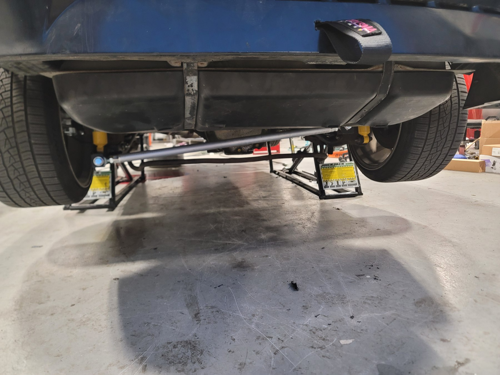
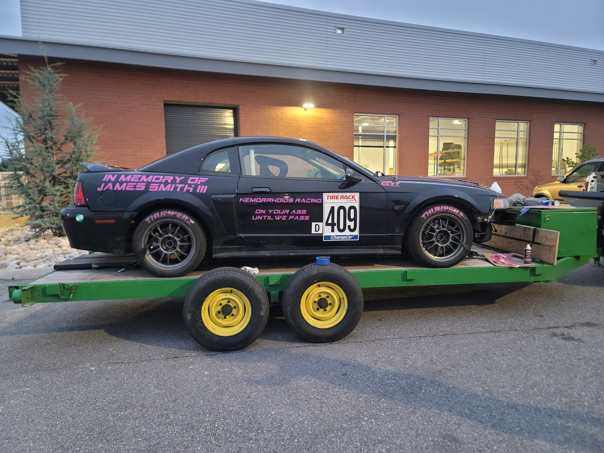
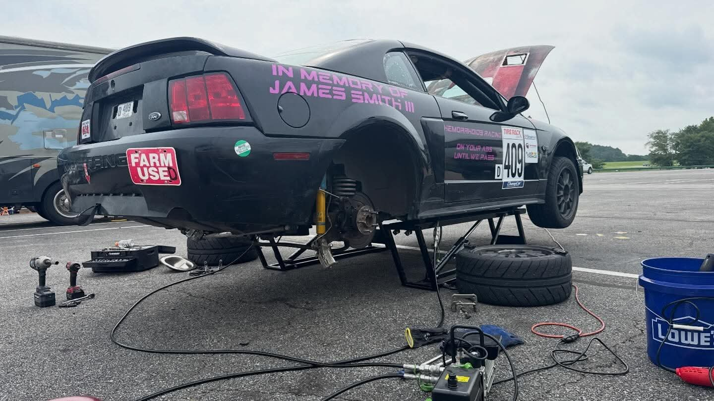
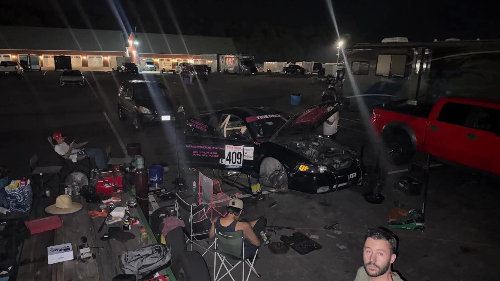
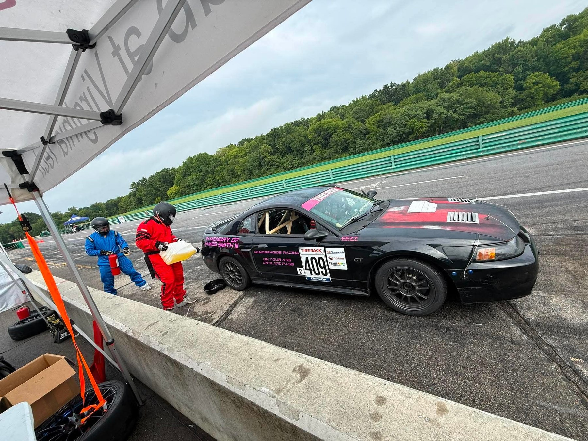
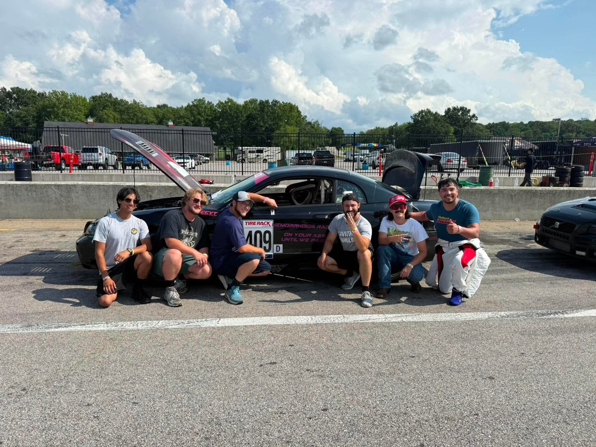
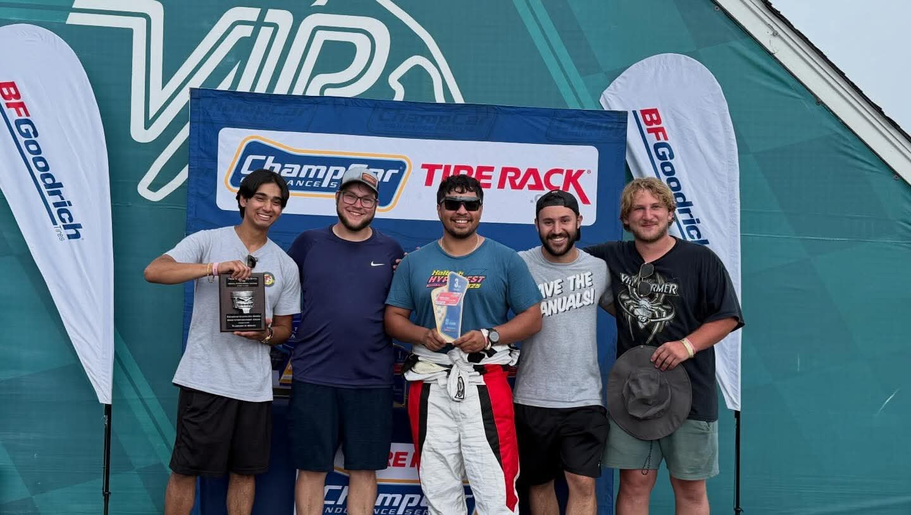
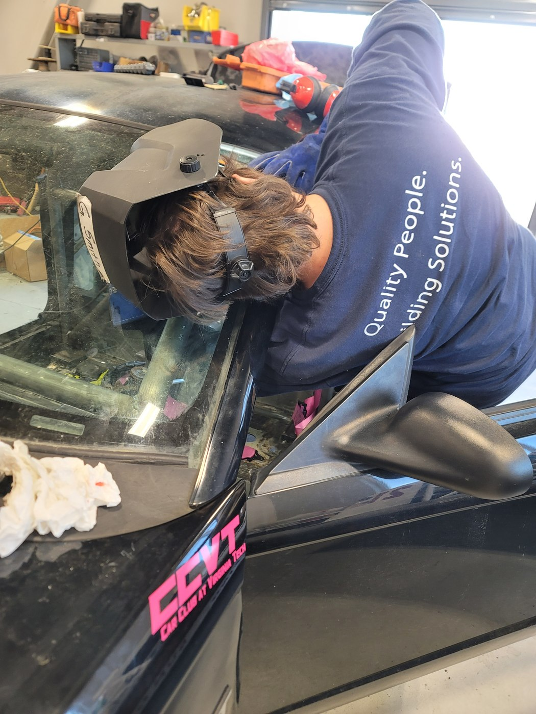

Project Overview
The Mustang project was a full-vehicle endurance-racing build rather than a single subsystem assignment. I co-developed the car with Garrett Smith and helped lead the mechanical preparation, parts selection, track testing, race logistics, and repair work needed to turn an inexpensive street-car platform into a ChampCar-ready endurance racer.
The design philosophy was straightforward: make the car safe, predictable, serviceable, and durable enough to survive extended track use. That meant treating suspension, brakes, cooling, fuel delivery, drivetrain reliability, safety systems, and trackside repairability as parts of one system.
Building the Race Car as a System
The mechanical logbook shows a concentrated build period from late March through the summer. Rather than adding isolated performance parts, the car was developed in layers: safety first, then braking and chassis control, followed by drivetrain, cooling, fuel, and serviceability work.
Make it legal, survivable, and easy to work on
Rhodes roll cage, race seats and harnesses, trunk-mounted battery, ignition switch panel, fire-suppression system, welded front/rear tow straps, and later quick-removal side windows.
Brake hardware sized for repeated track use
ATS four-piston Brembo front conversion, Cobra rear brakes, new master cylinder and hydroboost components, RBF 600 brake fluid, extended wheel studs, and front brake-duct backing plates.
Improve control and alignment at race ride height
Bilstein B6 dampers, Maximum Motorsports springs, front coilover conversion, bump-steer correction, tubular front arms, extended ball joints, tubular rear lower control arms, polyurethane bushings, reinforcement hardware, and a rear panhard bar.
Build a stronger, more predictable rear axle package
Rear-end rebuild with a Torsen helical differential, 3.73:1 gearing, new seals and bearings, followed by race-weekend replacement of the rear wheel bearings and clutch.
Support long-duration running
Larger radiator, distilled-water/Water Wetter cooling, replacement fuel tank, 300 LPH fuel pump and sender, and AN fuel-system fittings.
Turn hardware changes into a usable chassis
Post-install alignment was set to approximately -2.5° camber, -5.5° caster, and 0 toe, creating a documented baseline for track testing.
Build milestones
Roll cage installed; race seats and harnesses installed.
ATS four-piston Brembo front-brake conversion completed.
Battery relocation, ignition panel, hydroboost/master-cylinder service, Bilstein/MM suspension, front coilover conversion, bump-steer kit, and track alignment.
Tubular arms, extended ball joints, larger radiator, new front hubs/studs, Torsen/3.73 rear-end rebuild, Cobra rear brakes, rear control arms, panhard bar, and tow straps.
Fire suppression, new fuel tank, 300 LPH pump/sender with AN fittings, and front brake-duct backing plates.
Rear wheel bearings and clutch replaced during the car's first ChampCar weekend.


Track Testing Before the Endurance Race
The event log captures an important part of the engineering process: the Mustang was tested repeatedly before its first endurance race, and those events exposed weaknesses that could be corrected before race day.
Summit Point · Jefferson
8 HPDE sessionsA front rotor failure ended the second day early. The event demonstrated why brake durability had to be treated as an endurance-system requirement rather than a simple performance upgrade.
Summit Point · Shenandoah
8 HPDE sessionsGarrett and I completed the weekend without major issues. The test still identified pads and rotors as items that should move to track-focused hardware.
ChampCar · VIR
8 + 7 hour eventThe car's first endurance race became the ultimate validation test—and exposed two major failures the team had to solve under race conditions.

Day 1: Failure, Repair, and Another Failure
The original objective for the weekend was modest: get six drivers seat time and learn what the new car needed. Roughly 40 minutes into Day 1, both rear wheel bearings failed and the axle housing had already taken significant damage.
Instead of ending the weekend, the team sourced tools and replacement bearings locally, repaired both sides of the axle, and returned the Mustang to the track for roughly three more hours.

The clutch failure
As Day 1 continued, shifting became progressively harder and a severe screech developed whenever the clutch pedal was pressed. The car eventually had to be driven back to the paddock with improvised shifting, including starting in first gear because normal clutch operation was no longer practical.
Half the team drove approximately 30 minutes to source a clutch, pressure plate, flywheel, and bearings while the rest began disassembly. Once the drivetrain came apart, the failed clutch and pressure plate confirmed the diagnosis. The replacement flywheel did not fit, so the original flywheel had to be reused.

From Survival to a Podium Fight
Day 2 was the opposite of Day 1: the Mustang stayed on track. Some vibration was present early, but it remained stable and did not develop into another major mechanical problem. With the car finally accumulating uninterrupted laps, the focus shifted from survival to race position.
The team noticed it was consistently lapping faster than the Mustang ahead in class.
Good pit timing and fresh fuel recovered roughly three laps of the deficit.
The final stint completed the comeback and moved the car into 3rd place in class.

Choosing track position over the planned final driver swap
The initial plan was for me to take over late in the race and drive the Mustang across the finish. By roughly 3:15 p.m., however, the car was closing quickly on 3rd place. After discussing the situation with the driver, we chose to leave the car out rather than spend time on another driver change and fuel stop.
By around 3:50 p.m., the final stint had taken the Mustang from approximately 1.5 laps behind to about two laps ahead of the previous 3rd-place car. An oil-down then slowed the field, and the team brought the car across the finish in 3rd.
3rd in Class After an Overnight Rebuild
The Mustang's first endurance weekend became a practical lesson in why race cars must be designed to be repaired as well as driven. After dual rear-wheel-bearing failure, an axle repair, a destroyed clutch, an overnight transmission removal and reassembly, and roughly three hours of sleep, the team returned for Day 2 and completed the comeback to a class podium.
Track time stopped roughly 40 minutes into the event.
Drivetrain came apart in the paddock for overnight repair.
Stable mechanical behavior finally allowed the team to race for position.
The team converted repair work and consistent laps into a podium finish.


The Car Continued to Evolve After the Race
The mechanical logbook continued after the ChampCar weekend, including fabrication of quick-removal driver and passenger windows. The first endurance race provided a much clearer picture of which components needed more margin, which systems were working, and how the car should be prepared for future events.
